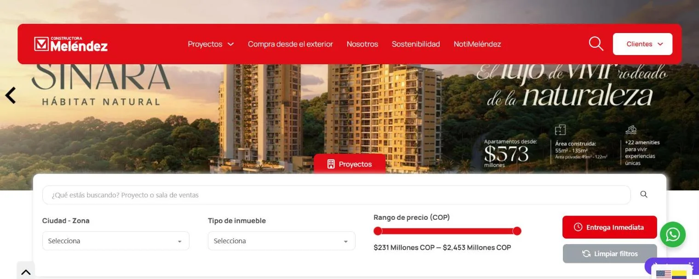

El reto
El sitio ya generaba interés. El reto era convertir y retener mejor.
Con más de 114.000 sesiones registradas y el 81% del tráfico desde móviles, la experiencia no podía ser un complemento: debía ser el principal canal comercial.
Sesiones registradas antes de la intervención.
Del tráfico llegaba desde dispositivos móviles.
El diagnóstico
El sitio atraía visitas, pero la infraestructura mostraba tensiones críticas.
El diagnóstico conectó rendimiento, servidor, datos comerciales, diseño y audiencias internacionales.
Rendimiento móvil estancado (PageSpeed en 36) y servidor saturado al 100% por renders de 43 MB.
Desconexión de datos entre SINCO ERP y la web, con precios desactualizados.
Sobrecarga visual, diseño obsoleto y ausencia de buscador en el Home.
Tráfico internacional relevante (EE. UU., Canadá, Chile) sin una experiencia segmentada.
La oportunidad
¿Qué pasaría si la web cargara al instante y mostrara precios exactos en tiempo real?
Reducir la fricción y conectar el inventario serviría para capitalizar la intención de compra y atraer leads de mucha mayor calidad.
Decisiones estratégicas
La decisión no era solo rediseñar. Era ordenar el sistema tecnológico.
Sincronización ERP
Creación del plugin propietario “Uhura” para conectar SINCO y WordPress en tiempo real.
Performance (WPO)
Conversión de más de 6.000 imágenes a WebP/AVIF y diferimiento de scripts pesados.
UX / UI Mobile
Buscador inteligente en el Home, reducción de ruido visual y centralización de la información por proyecto.
Evidencia
Ordenar la experiencia y el sistema tecnológico impactó directamente en el embudo comercial.
En tráfico de sesiones (+48.000 usuarios únicos al mes).
En generación de leads.
De permanencia promedio por sesión.
De descompresión en el servidor.

Aprendizaje estratégico
Constructora Meléndez demuestra que el crecimiento no depende de una sola métrica.
Depende de ordenar el sistema completo: estética funcional, sincronización de datos y rendimiento sin fricciones.